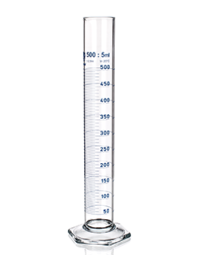

Graduated cylinder is a volumetric apparatus made of glass or plastic. This graduated cylinder measured 50 milliliters of volume of a liquid. It stands on a base made of plastic or glass. Please move your fingers in the upward direction. The major and minor lines represent 10 and 1 millileters, respectively. Desired volume of a liquid can be measured and or delivered from a graduated cylinder. Graduated cylinders are available in various sizes including 10, 25, 50, 100, and 250 milliliters. Large size graduated cylinders can measure volumes in liters.
However, for more accurate measurement of volumes, other volumetric-ware like buret, pipet, and volumetric flask are used.
